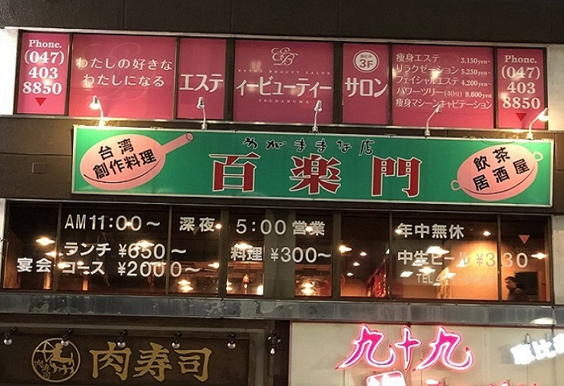
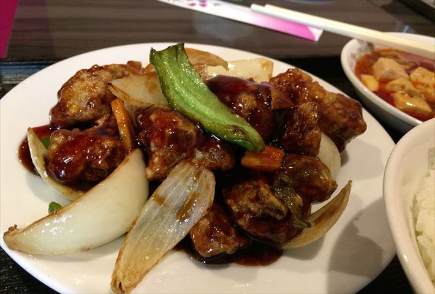
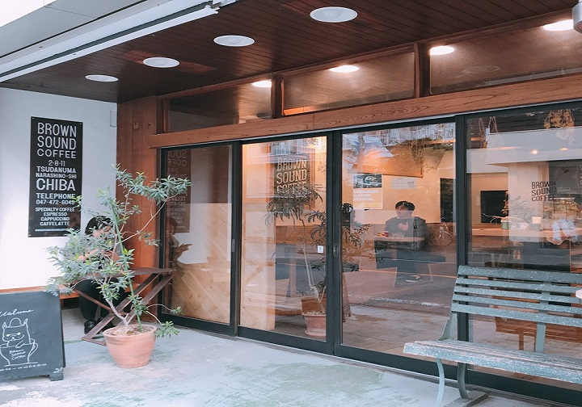

その他（中華料理、オシャレなカフェ、
ファミレスetc...)
ファミレスetc...)
ランチは食べ放題で高コスパ！『台湾料理 百楽門』

安くて美味しくお腹いっぱいになるランチが食べたい！ そんな希望を叶えてくれるお店が『台湾料理 百楽門』です。 JR津田沼駅からパルコ方面に進んだ「九十九ラーメン」のビル2階です。

お店のおすすめは、『すぶたの黒酢炒め定食セット 780円！』
ごろっと大きな酢豚のお肉！
黒酢の酸味とコクが絡んだジューシーなお肉でご飯が止まりません。
そしてここのすごいところは、お惣菜やサラダやフルーツが全て食べ放題！
麻婆豆腐や野菜の煮込みやナムル、もやしの中華炒め、杏仁豆腐など盛り沢山！
メニューは日によって変わるのでいつ行っても飽きません。
お得感いっぱいの百楽門のランチは土日も実施されています。
ぜひそのボリュームを確かめに！
台湾料理 百楽門 （ひゃくらくもん）
- 【📒】千葉県船橋市前原西2-21-6 東関東ビル2F
- 【📞】047-471-9468
- 【🕒】[月～土]11:00～14:30、[日]11:00～24:00
- 【休】なし
- 【🚙】JR津田沼駅北口から徒歩3分
お洒落で落ち着く居心地No.１『BROWN SOUND COFFEE』

次に紹介するのは、千葉工大裏手にあるスペシャルティコーヒー専門『BROWN SOUND COFFEE』さん。
店内は高い天井で、広々としていて窓も大きく明るいです。
木のぬくもりが感じられ、森の中の隠れ家にいるようで居心地がすっごくいいです。
そんなここでのおすすめ商品はこの絵が入ってる、
『カプチーノ 420円』です。
こんな他にはないお洒落なものが味わえるのは魅力的ですね。
またここの凄いところはテイクアウト商品があることです。
その名も『ピクニックセット 550円』。これが大人気。
家やお出かけ中にも飲みたい方はブラウンサウンドコーヒーへ！
BROWN SOUND COFFEE
- 【📒】千葉県習志野市津田沼2-8-11
- 【📞】047-472-6049
- 【🕒】9:00～19:00
- 【休】月曜日、第１・３木曜日
- 【🚙】京成津田沼駅より徒歩5分、JR津田沼駅より徒歩9分
↓津田沼にあるファミレスです
・サイゼリヤ 津田沼南口店
JR津田沼駅南口から徒歩1分
・ロイヤルホスト 津田沼駅前店
JR津田沼駅徒歩4分
・デニーズ 津田沼駅前店
JR津田沼駅徒歩1分 22m
・ジョナサン 津田沼駅前店
JR津田沼駅徒歩2分